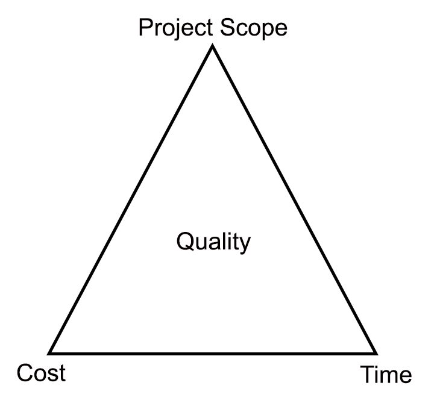
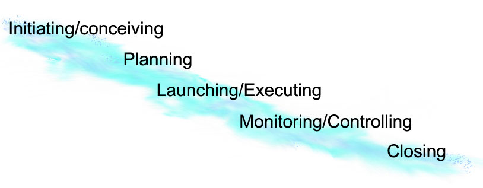

Project Management: Fundamentals

Project managment fundamentals
projects defined
For the purposes of this book, a project is defined as a series of tasks, inputs, and outputs that occur over a limited period of time to achieve a specific outcome. Projects are finite in length and have defined start and end dates. In most cases, projects have defined acceptance criteria and deliverables that must be achieved within a set time frame and budget. Project management, then, is the application of processes, knowledge, skills, and experience to achieve specific project outcomes and objectives. As a modern field of management, project management has existed in some form since the 1950s or earlier. Some give credit to the American Association of Cost Engineers (AACE) for leading us to project management as we know it today (Haughey, 2021). Others give credit to the United States Navy (Seymour & Hussein, 2014). No matter who the original credit is given to, as a field has a history of at least sixty years or more.
A project can be thought of as "a microcosm or a macrocosm. At any level in the work breakdown structure, from the standpoint of the manager in charge of a particular part of a project, there is a separate project that he or she is responsible for. All projects are part of some larger project and all projects have sub projects within them. It is just a matter of perspective." (Newell, 26) Good project management techniques will work on any size project or program. The tools and methodologies are similar on all projects.
If the project seems to keep evolving into further projects or expanded definition, then you are experiencing scope creep. Scope creep is caused by adding work to a project that was not in the original specifications (or was not clearly defined in the original specifications) until it reaches the point that the original schedule, resource, or cost estimates become meaningless.
Project success is usually based on satisfying customer needs/desires in a timely manner using limited resources and with quality results; a key factor to this is successfully defining the project goals, scope, and requirements early on and ensuring all stakeholders are in agreement.
Project Life Cycle
So now we have looked at project processes, now let’s concentrate for a bit on the project life cycle. Every project, as noted above, has a definite beginning and end. Due to this, it also has a life cycle. It starts with deciding to start the project and ends with either completion or termination of the project; however, let’s be a little more specific than that. Usually a project goes through some specific stages:
- conceptual phase
- definition phase
- planning phase
- design phase
- implementation/execution phase
- acceptance phase
- close-out
At a minimum, projects go through definition, planning, execution, and closing. Commonly at the end of each phase key stakeholders assess the project and decide to either stop or continue to the next stage.
Note: a project life cycle is different than a product life cycle. Product life cycle commonly includes requirements planning, product design, product construction, and product operations.
Project management defined
.png) So now that we know what a project is, what is project
management? Well, perhaps the greatest aspect of it is communication and the second greatest factor
is organization skills. However, I don't think that would qualify as an official definition. Basically you can
think of project management as involving five key processes:
So now that we know what a project is, what is project
management? Well, perhaps the greatest aspect of it is communication and the second greatest factor
is organization skills. However, I don't think that would qualify as an official definition. Basically you can
think of project management as involving five key processes:
- Initiating,
- planning,
- executing/implementing,
- controlling, and
- closing (Gerold, 2003; Wikimedia, 2021).
To be successful with each process though you need to manage expectations, actively listen, clearly communicate, and ensure the project is on target in all aspects. There are four basic project management tasks:
- Clearly defining what will be done,
- clearly defining when it will be done,
- clearly defining how much it will cost, and
- clearly defining by whom and with what resources (people and other) will be necessary
Key project managment Processes
Lets take a moment to look at each of the key processes in project management:
Initiating - At this level you determine if the project is worthwhile, feasible, practical, and of high value compared to other alternative projects. You also establish goals for the project, the general scope, the general expectations, define the environment (internal and external), and select initial members of the project team. Again, make sure you spend ample time assessing the project itself. Replacing a faulty process with a new one will not solve company problems. Make sure you are addressing the true issues and causes rather than surface or associated issues; and make sure your solutions satisfy real needs or desires instead of simply perceived needs/desires. Equally, spend some time defining potential audiences who could be affected by the proposed project and assumptions made in relation to the project.
Planning - By this time you have determined that you would like to try and move ahead with the project. Now you need to define the work necessary for project completion, identify needed resources (manpower and otherwise), create a project schedule, and develop a budget. At this point you need to refine the project scope and required time, results and resources specified in the initiating stage. You will want to list tasks and activities that will be required to achieve project goal and then sequence these in the most efficient manner possible. You want to be sure that this plan is agreed upon by all stakeholders. Clear specifications at this level will avoid scope creep and conflicting expectations in the progression of this project.
Execution/Implementation - Execution involves coordinating and guiding project participants to complete work as specified in the project plan developed during the planning stage. It also means procuring all necessary resources such as manpower, equipment, hard goods, and time. Throughout execution the project manager needs to communicate with stakeholders.
Controlling - This is basically watching over the project as a whole and making sure it stays on track. Using controlling processes the project manager ensures timelines are being met and job tasks being performed to specifications. It also incorporates change control which limits scope creep and deviations from the original plan. Basically you measure progress toward the objectives.
Closing - As you can guess, this is near the end of the project. At this point you reflect on how the project progressed and hopefully celebrate successful and satisfactory completion. An important part of this step is ensuring there is acceptance of the end-product and ensuring the outcome not only satisfies the original need/desire but is going to continue to be actively used after project completion. You also should review the project processes and outcomes with team members and stakeholders, and then write up a final project report.
Note: the planning, executing and controlling stages are often repeating stages occurring throughout the lifetime of the project, whereas the initiation and closing phases are commonly only done once.
Triple Constraints
Along with project management, a term called triple constraints has been around about as long. Project managers often have to juggle many constraints or limitations when working to meet desired outcomes and deliverables. Three areas that are almost always at play in relation to the quaity and outcomes of a projet are: cost, time, and project scope. These three items are what are known as the triple constraint. They are often drawn in a triangle and a common phrase used is that a manager must choose two as the cost of the third.

Triple constraints are also sometimes called the project management triangle, or the iron triangle.
Project Management Traditional Waterfall Method

Perhaps the most well-known project management methodology is the Waterfall Method, otherwise known as a predictive approach. This method relies on heavy up front analysis and planning which then guides and controls all future project work. While the terminology may vary a bit, it largely includes moving chronologically from on step to another in the following basic sequence: initiating/conceiving, planning, launching/executing, monitoring/controlling, closing (Wikimedia, 2014). Some even refer to these five processes as the project management life cycle.
Below is the traditional project management life cycle in basic terms:

Project Management Phased/Stages Approach
One issue with a straight waterfall only method is that many projects often end up with a series of phases or stages of some sort. Basically you have a set of projects where project one leads to project two and so forth. The latter projects do not occur until the prior project is completed. This may be best explained with an example. Let's say I am making an e-commerce Web site for a small local company. The first project/phase may revolve around defining needs and expectations, which leads to a web site project outline and business plan of some sort. Once the customer and any other relevant stakeholders are in agreement, this may lead to a second project/phase in which "straw man" web site structure is developed where key elements are identified and roughly laid out. The team to do this work may or may not be the same team that did the first project/phase. After the key elements are identified and roughly laid out, a third project/phase may start where the focus is almost entirely on design with hopefully usability incorporated as well. Again this group may be entirely different than those that came before them, other than perhaps an overall project manager or coordinator. After the third project/phase group settles on an agreed upon design, often inclusive of a style guide that specifies items such as fonts, colors, layouts, logo usage, elements, and the like, the Web site is likely to move to a fourth project/phase where the initial live mock up (beta version) is developed and tested. Quite often those who are the designers are not the same individuals as those who are the programmers. After the site is programmed and ready for pre-release, it is likely to go through in-depth content development, usability testing, and more. Each of these may be seen as separate projects or phases. In the end, one e-commerce Web site may have necessiated upwards of ten or more projects to see it through to final completion.
It is important to note that in both a single water fall project and in a project management phased/stages approach, a project always ends. All projects have a definite start and a definite finish. If there is not a defined start and finish then what you are dealing with is most likely not a project but an ongoing process or procedure.
Software Development Life Cycles
One area that has gained its own type of project management cycle is software development. While it may vary a bit, project management in this area often includes the following phases: initiating, planning, requirement analysis, design, implementation, testing, evolution, integration, and maintenance. In this area, agile management, as is later discribed int this book, has also gained a strong foothold and moves project management from a single cycle to sets of much smaller cycles that work together.
CRITICAL SUCCESS FACTORS / kEY SUCCESS INDICATORS
Critical Success Factors (CSF's), also known as Key Success Indicators (KSI's), are factors that create an environment conducive to project success. The idea simple. in any organization certain factors will be critical to the success of that organization, in the sense that, if objectives associated with the factors are not achieved, the organization will fail--perhaps catastrophically so. One goal is to get agreement on what your critical success factors are. Once you select a set of metrics you have to live with them, therefore they have to be chosen very carefully.
Critical success factors in project management include things like:
- management and stakeholder approval (manager commitment to project)
- appropriate and clearly defined scope
- consistent goals and objectives for all associated with the project
- accommodation of people's needs and priorities
- building a good committed team
- having frequent and clear communication
- developing a detailed project plan
- consensus on expected project outcomes
- flexibility and a willingness to adapt
- leadership
- coming up with a realistic schedule
- ensuring sufficient resources
Critical success factors are the causes for project success and are often qualitative in nature. They are not used to evaluate individual performance.
Keeping Track
With all projects, there are many things to track and consider. For example, how early does one company know
whether a product - and the underlying project - is a success on the market? Or is it t a problem when one
project, although successful, stole resources from other projects/programs in order to respect deadlines and
goals? For the latter we need to consider a stream of projects, not just one, when making decisions. For making
informed decisions we need to track how we are doing. This may sound easier than it is. It is hard to keep track
of the exact hours spent on a particular project because many people work in a multi-project environment.
Tracking progress can be difficult if milestones are poorly defined so whether they have been meet or not is
subjective and can be "gamed". Time left to complete necessary tasks can be difficult even if you
already know the time spent to date.
Just as there are critical success factors for a project, there are critical success factors for implementing project management itself:
- Project tracking
- Organizational alignment
- Clear prioritization
- Use of facts and data for decision making
- Reglar communication in a "common language"
- Projects of appropriate scope and size
- Visible and consistent support of executive management
Obstacles to Project Management
As you could guess, there are many things that could negatively impact your project or cause it to be dropped after initiation. Here are a few common ones that come to mind:
- Lack of upper management support
- Lack of agreement on initial goals and objectives
- Lack of stakeholder support or understanding
- Lack of funding or required resources
- Unclear project definition or expectations
- "Renegades" who don't follow the project plan
- Diminished interest either as progressing or at completion
- Lack of use of final outcome
- Personality conflicts
- A plan that is too simple, complex, or unrealistic
- Poor leadership style
- Inadequate controls and monitoring
- Weak communication between project team members or management
- Re-inventing the wheel or redundancy
As bettermanagement.com points out, there are things we can do to limit our susceptibility to obstacles:
- Evaluating the organizations mission and culture relative to the new project.
- Planning an effective decision-making structure.
- Establishing adequate controls to govern the new project.
- Development of an appropriate implementation and execution strategy.
- Identifying relevant performance "benchmarks."
- Deciding upon an exit strategy.
With IT projects another large issue is definition of requirements. As a matter in fact for technology and IT related projects requirements planning could almost be considered a project area in and of itself. After all, faulty requirements up front will lead to a outcome that does not satisfy actual needs. There is a tendency to use technology for technologies sake, when instead technology should only be used when it serves a clear purpose.
Roles in project management
Project Manager Role
Ok, that is all well and good, but what is the actual role of a project manager anyway? Well, a project manager is the person who takes overall responsibility (accountability) for coordinating a project to make sure the desired end result is met on time and within budget.
Common attributes of a strong project manager include:
- Ability to coordinate resources and technology to secure predictable results
- Ability to plan effectively and act efficiently
- balancing the interplay between planning and acting
- Ability to create practical and effective work flow and timeline diagrams/charts
- Ability to communicate clearly
- Strength in conflict resolution
- Ability to motivate team members and create positive relationships with team members and stakeholders
- Adherence to the priorities of the business
- Knowledge of the industry and available technologies
Common project manager tasks include:
- establishing objectives
- breaking work into well-defined tasks
- charting work sequences
- scheduling
- budgeting
- coordinating the team which may consist of individuals from various professional backgrounds
- reporting
The Project Management Institute (2000) notes nine areas of expertise for project managers: cost, time, scope, quality, communications, human resources, contracts, supplies, and risk management
Project Team Role
The primary role of the project team is to see the project to completion. Their focus should be on ensuring the project goals and expectations are met, within budget and timeframe and of the expected quality. They often will need to work together and clearly communicate when milestones have been met so the team can successfully move forward. If one task area of the team is not able to perform their task or falls behind schedule, it is important they inform all other team members down the line as it will likely affect their timelines as well. Our Keogh reading (2002) says it well, "a project is similar to a football game where the project manager is the coach and members of the project team are the players who win or lose the game." (p. 10)
Management Role
The role of management is to support the project both financially and priority-wise. They are also responsible for making any key decisions that must be made and for accepting/denying any scope change requests. For a project to be successful it needs the support of management in resource allocation and priority - no matter how good a project is, if you do not have ample and timely resources available the project will stall or fail. For example, if you need a particular server upon which to install your software but are not supplied the server nor is the network administrator granted permission to incorporate a new server into the network, you will be at a stall until these needs are met.
STAKEHOLDERS
Stakeholders are any individuals who are impacted by a project. Ideally stakeholders are supporters, but in some cases they may also demonstrate resistance. Identification of stakeholders is an important part of project management. This includes analysis of their expectations, influence, and involvement. In many cases, frequent communication is required with stakeholders throughout the duration of the project. Some examples of stakeholders include customers, sponsors, employees, users, managers, and governance bodies.
See the project management planning chapter for information on stakeholder management.
Project Management Knowledge Areas
Whether your project is a single project or a phased/stages approach, there are general project management knowledge areas that are likely key. Perhaps the most well-known certification for project management is Project Management Institute’s (PMIs) Project Management Professional (PMP) which is based on the Project Management Body of Knowledge (PMBOK®). They define ten knowledge areas:
- Integration Management
- Scope Management
- Time/Schedule Management
- Cost Management
- Quality Management
- (Human) Resource Management
- Communications Management
- Risk Management
- Procurement Management
- Stakeholder Management
Learn more:
Putting them together creates a matrix like below:
| Knowledge area | Process Groups | ||||
| Initiating | Planning | Executing | Monitoring & Controlling | Closing | |
| Integration | Develop project charter | Develop project management plan | Direct and manage project work; manage project knowledge | Monitor and control project work; perform integrated change control | Close project or phase |
| Scope | Plan scope management; collect requirements; define scope, create work breakdown structure | Validate scope; control scope | |||
| Schedule | Plan schedule management; define and sequence activities; estimate durations; develop schedule | Control schedule | |||
| Cost | Plan cost management; estimate costs; determine budget | Control costs | |||
| Quality | Plan quality management | Manage quality | Control quality | ||
| Resource | Plan resource management; estimae activity resources | Acquire resources; develop team; manage team | Control resources | ||
| Communications | Plan communications management | Manage communications | Monitor communications | ||
| Risk | Plan risk management; identify risks; perform qualitative and quantitative risk analysis; plan risk responses | Implement risk responses | Monitor risks | ||
| Procurement | Plan procurement management | Conduct procurements | Control procurements | ||
| Stakeholder | Identify stakeholders | Plan stakeholder management | Manage stakeholder engagement | Monitor stakeholder engagement | |
References
Haughey, D. (2021). A Brief History of Project Management. ProjectSmart. Retrieved January 24, 2022 from https://www.projectsmart.co.uk/history-of-project-management/brief-history-of-project-management.php
Project Management Institute (2000). A Guide to the Project Managment Body of Knowledge. Newton Square, PA: Project Management Institute, Inc.
Puget Sound Project Management Institute (n.d.). PMBOK study outline. Retrieved January 1, 2021 from http://pugetsoundpmi.org/images/downloads/PMP_Study_Groups_Downloads/pmbok_study_guide.doc
Newell, M. (2002). Preparing for the Project Management Professional Certification Exam.
Seymour. T., & Hussein, S. (2014). The History of Project Management. International Journal of Management and Information Systems. 18(4). 223-240. Available at https://www.clutejournals.com/index.php/IJMIS/article/view/8820
Wideman, M. (2004). The Role of the Project Life Cycle (Life Span) in Project Management. Available at http://www.maxwideman.com/papers/plc-models/plc-models.pdf
Wikimedia Commons (2008). Project Management Phases. Retrieved January 1, 2021 from https://commons.wikimedia.org/wiki/File:Project_Management_(phases).png
Wikimedia Commons (2014). Project Management Lifecycle.jpg. Retrieved January 1, 2021 from https://commons.wikimedia.org/wiki/File:Project_Management_Lifecycle.jpg